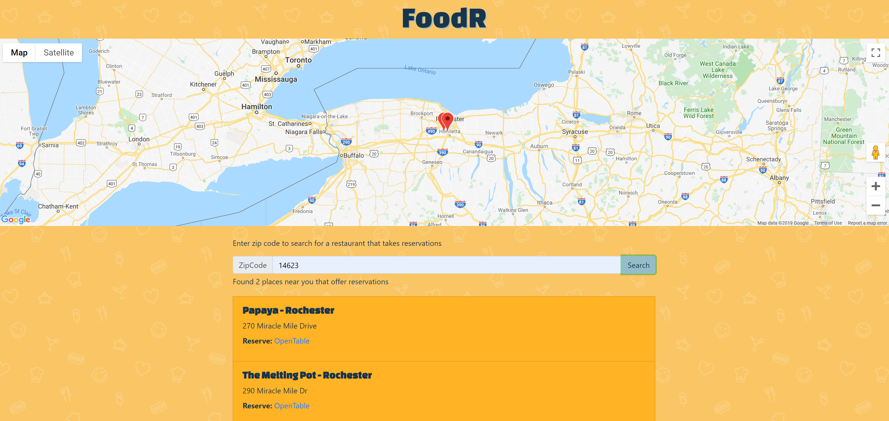

A web app that helps users discover restaurants by zip code and see which ones accept reservations. Built in the spring of 2018 for Rich Media Web App Development. Combines location-based search with reservation availability in one streamlined interface.
Integrated the Google Maps API and OpenTable API to fetch and display restaurant data. Built the frontend with Vue.js to handle dynamic data binding, search, and filtered results. Designed the UX flow so users can enter a zip code, browse nearby restaurants, and quickly identify reservation options.
Vue.js, Google Maps API, OpenTable API
